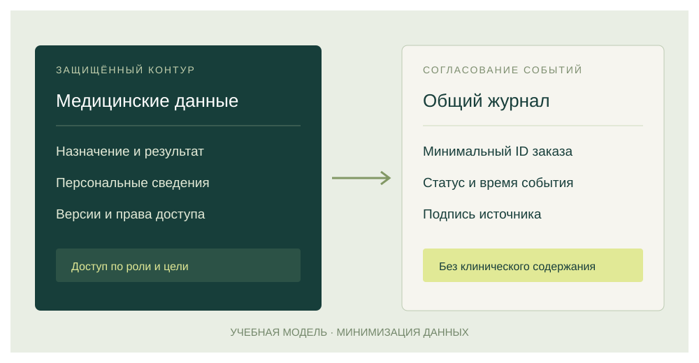
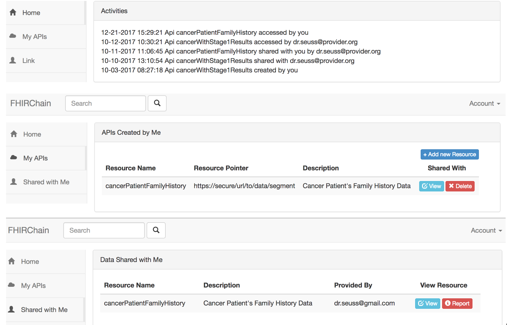
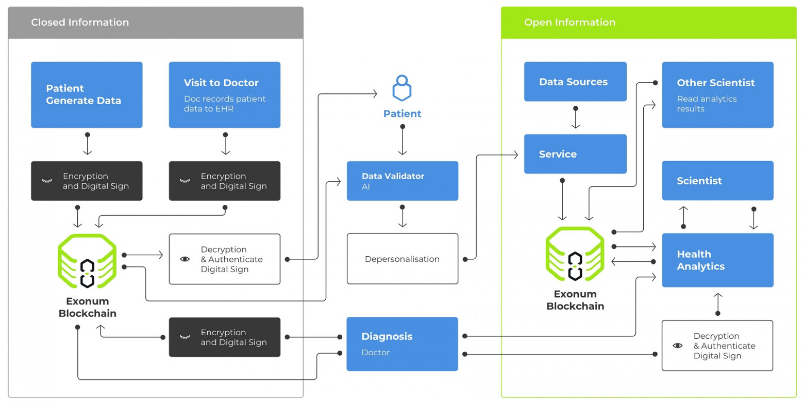

За кнопкой «Записаться» —
целая цепочка доверия
Пациент выбирает исследование, оплачивает заказ и ждёт результат. Для него это один сервис. Для инфраструктуры — взаимодействие клиники, лаборатории, платёжной системы и медицинского хранилища.
Цифровизация начинается там, где меняется сам процесс: запись связана с расписанием, назначением, оплатой и выдачей результата. Электронная форма сама по себе мало помогает, если сотрудник затем вручную переносит её в другую систему. Хороший сервис делает понятным каждый переход: кто принял заказ, что оплачено и когда можно получить документ.
Здесь электронная коммерция встречается с цифровой медициной. Каталог услуг, договор, расчёт, исполнение и возврат образуют коммерческую часть. Назначение, образец, исследование и интерпретация относятся к медицинской. Эти процессы связаны, но доступ к истории платежей не должен автоматически открывать доступ к результатам анализов.
Главная трудность — согласовать смысл сообщений. Если клиника понимает под «выполнено» взятие материала, а лаборатория — подписанный результат, единый формат обмена не устранит расхождение. Участникам нужны общие определения состояний, ответственные за переходы и процедура исправления ошибок.
Ценность технологии определяется тем, помогает ли она получить корректную информацию вовремя и восстановить ход событий при споре.Критерий оценки в исходном реферате
В рекомендациях ВОЗ цифровые вмешательства оцениваются через пользу, возможный вред, приемлемость, осуществимость, ресурсы и равенство доступа. Это полезная рамка и для учебного проекта: ускорение обмена не оправдывает ухудшение доступности помощи. [1]
Не один инструмент,
а несколько разных идей
Под Web 3.0 часто объединяют два подхода. Семантический веб помогает программам понимать связи между понятиями. Блокчейн-ориентированный Web3 предлагает распределённые приложения, цифровые активы и совместно поддерживаемые реестры. Это разные задачи: наличие ИИ, VR или датчика само по себе не делает сервис децентрализованным.
Согласовать значение
Какой именно показатель измерен? В каких единицах? К какому назначению относится результат?
Стандарты OWL / W3C ↗Согласовать историю
Кто подтвердил событие? В какой последовательности? Совпадают ли записи у независимых участников?
Обзор NIST ↗Блокчейн связывает записи криптографически и использует правила согласования состояния. Он помогает обнаруживать изменения истории, но не проверяет реальность медицинского события. Ошибочное сообщение лаборатории может быть столь же устойчиво записано, как правильное. Смарт-контракт выполняет правило; ответственность за исходные сведения остаётся у их поставщика. [2]
Сведения из внешнего мира поступают через оракулы. Для нашего сценария оракулом мог бы быть сервис, передающий подписанное подтверждение выполнения заказа. Так доверие не исчезает, а получает конкретную границу: кто имеет право сообщить событие и как его оспорить. [3]
Что именно проходит через систему?
Авторская анимация показывает три разных объекта: заказ, подтверждение оплаты и медицинский результат. Видео хранится на самом сайте.
Текстовое пояснение к видео
Пациент выбирает исследование. Сервис создаёт заказ. Платёжный провайдер сообщает только статус оплаты. Лаборатория выполняет исследование и сохраняет результат в защищённой системе. В общий журнал попадает подтверждение события, а не диагноз. При ошибке требуется отдельная сверка.
Для углубления: видеоурок 3Blue1Brown об устройстве Bitcoin ↗ (английский; внешний ресурс).
От выбора анализа
до защищённого результата
Исследуйте учебный сценарий. Выберите этап — схема покажет, кто действует, какие данные передаются и что фиксируется в журнале.
Повторная доставка одного сообщения не должна создавать повторную оплату или второй возврат. В предлагаемой архитектуре у каждого события есть идентификатор. Получатель проверяет, обработано ли оно, и сопоставляет переход с текущим состоянием заказа. При разрыве связи событие ожидает отправки, а интерфейс честно показывает промежуточный статус.
Особенно важны исключения: непригодный образец, отказ исполнителя после оплаты, исправленный результат. Они требуют отдельного решения, а не механического перехода в «выполнено». Запись в журнале помогает разбирать ситуацию, но не закрывает претензию и не оценивает клиническую правильность.
Послушать последовательность
Четыре возрастающих сигнала соответствуют выбору, оплате, исследованию и результату. Звуковая схема помогает запомнить порядок этапов; это авторская иллюстрация, не медицинский сигнал.
8 секунд · синтезированные звуки · запуск вручнуюЦифровой платёж
не всегда криптовалюта
Онлайн-оплата описывает канал взаимодействия, а не один вид денег. Криптовалюта учитывается по правилам сети. Стейблкоин стремится поддерживать привязку к ориентиру, но несёт риски механизма обеспечения. Цифровой рубль выпускает Банк России; это форма национальной валюты с другой моделью, чем у частного криптоактива. [4] [5]
Цена услуги фиксирована.
А курс актива?
Условная услуга стоит 3 000 ₽. В момент оплаты за неё передан 1 условный токен. Измените курс: сколько теперь стоит тот же токен?
3 000 ₽
Стоимость токена совпадает с исходной ценой услуги.
Договор и перевод — разные объекты. Для сервиса необходимо определить, когда обязательство считается исполненным и как разбирать возврат. В учебной модели медицинский результат не ставится в зависимость от демонстрационного курса. Выбор платёжной инфраструктуры требует отдельной правовой и организационной оценки.
Общий статус.
Разный уровень доступа.
Совместимость помогает доставить информацию. Контроль доступа определяет, кому её можно показать.
HL7 FHIR задаёт модели ресурсов и способы обмена медицинскими сведениями. При этом FHIR сам по себе не является протоколом безопасности: защищённый канал, аутентификация, полномочия и аудит проектируются дополнительно. Для реального обмена важен и смысл: код исследования, единица измерения, время получения и версия результата. [6]

В модели DID децентрализованный идентификатор связывается со средствами проверки. Но идентификатор ещё не подтверждает профессию врача. Модель проверяемых удостоверений W3C отдельно выделяет издателя, держателя и проверяющего: важно, кто подписал утверждение, доверяет ли ему получатель и действительно ли удостоверение. Ни одна из этих записей сама по себе не предоставляет доступ к медицинской карте. [7] [8]
- ✓ Назначение и медицинский результат
- ✓ Статус исполнения исследования
- — Полные платёжные реквизиты не нужны для лечения
В реальной системе права зависят от роли, конкретной цели, согласованных оснований и срока доступа. Матрица иллюстрирует принцип минимизации данных.
Диагнозы, паспортные сведения и содержание результата не помещаются в открытый реестр. Даже хеш требует оценки риска связывания с человеком. Восстановление доступа, отзыв полномочий сотрудника и действия при отказе внешнего сервиса должны быть предусмотрены до запуска пилота.
Что уже исследовали —
и что это доказывает
Статья об архитектуре, прототип и промышленное внедрение дают разные уровни доказательности. Два примера из реферата показывают способы организации обмена. Они не подтверждают универсальное преимущество блокчейна для каждой клиники.
FHIRChain: обмен клиническими данными
Zhang и соавторы связали FHIR с блокчейн-архитектурой и продемонстрировали приложение для совместного принятия решений в удалённой онкологической помощи. Пример важен разделением клинического содержания и механизмов предоставления доступа. Массовое внедрение или измеренный эффект для всех клиник из наличия прототипа не следуют. [9]

Exonum: модель медицинской экосистемы
В статье Bitfury на Хабре описана схема обмена медицинскими данными с использованием Exonum. Авторы также сообщают об отдельных тестированиях компонентов. Для нашего сценария важен вопрос границ между закрытой информацией и обменом. Это первичный материал разработчика, а не независимое сравнительное исследование эффективности. [10]

Перспективность ещё нужно проверять
Систематический обзор Fang и соавторов включил 58 публикаций о персональных медицинских записях на блокчейне. Авторы указывают на необходимость дальнейшей проверки удобства, безопасности и эффективности. Это исторический срез исследований, а не текущая статистика внедрения. [11]
Открыть систематический обзор ↗Для собственного пилота из реферата предлагается одна клиника, одна лаборатория и ограниченный набор услуг. Измеряются время до получения результата, доля ручных сверок, ошибки сопоставления и затраты сопровождения. Показатели сравниваются с действующим процессом при сопоставимой нагрузке. Это план проверки, а не выдуманные результаты внедрения.
Сначала — понятный процесс.
Затем — технология.
Web3 может помочь независимым организациям согласовывать события. Пользу нужно подтверждать на конкретной задаче и сравнивать с более простой архитектурой.
- 01
Совместимость — основа
Единый смысл статусов и данных, защищённый обмен и аудит важнее эффектного технологического названия.
- 02
Оплата и медицина связаны, но разделены
Коммерческий сервис должен поддерживать отмену, возврат и спор. Клиническое содержание хранится в защищённом контуре.
- 03
Реестр не заменяет ответственность
Подпись подтверждает происхождение сообщения. Ошибку ввода, качество исследования и права участников проверяют отдельно.
- 04
Пилот должен давать измеримый эффект
Если база данных с аудитом решает задачу проще, для блокчейна пока нет достаточного обоснования.
Что безопаснее передать в общий журнал учебного заказа?
Выберите ответ — появится пояснение.
Продолжить исследование
Основа лонгрида — реферат «Электронная коммерция и криптовалюты в цифровой медицине». Материал адаптирован для веба: добавлены учебные интерактивные модели и авторская анимация. Исторические кейсы датированы; внешние страницы проверены 8 ноября 2026 года.
- 01WHO guideline: recommendations on digital interventions for health system strengthening ↗
World Health Organization. Geneva, 2019. ISBN 978-92-4-155050-5. Рамка оценки пользы и ограничений цифровых вмешательств.
- 02Yaga D., Mell P., Roby N., Scarfone K. Blockchain Technology Overview ↗
NISTIR 8202. 2018. DOI: 10.6028/NIST.IR.8202. Технический обзор распределённых реестров.
- 03Oracles / ethereum.org ↗
Документация об обмене между смарт-контрактами и внешними источниками данных.
- 04Stablecoins / ethereum.org ↗
Механизмы привязки и ограничения стейблкоинов.
- 05Цифровой рубль / Банк России ↗
Официальное описание формы национальной валюты и её платформы.
- 06FHIR Security / HL7 International ↗
FHIR Release 5, version 5.0.0. 2023. Обмен данными, защита каналов, права и аудит.
- 07Decentralized Identifiers (DIDs) v1.0 / W3C ↗
W3C Recommendation, 19.07.2022. Архитектура децентрализованных идентификаторов.
- 08Verifiable Credentials Data Model v2.0 / W3C ↗
W3C Recommendation, 15.05.2025. Издатель, держатель и проверяющая сторона удостоверения.
- 09Zhang P., White J., Schmidt D. C. et al. FHIRChain ↗
Applying Blockchain to Securely and Scalably Share Clinical Data. 2018. arXiv:1807.03227. Исследовательский прототип.
- 10BitfuryRussia. Блокчейн и медицинские данные: как это работает ↗
Хабр, 03.03.2019. Экспертная статья разработчика о медицинской экосистеме Exonum.
- 11Fang H. S. A., Tan T. H., Tan Y. F. C., Tan C. J. M. Blockchain Personal Health Records: Systematic Review ↗
Journal of Medical Internet Research. 2021. Vol. 23, no. 4. e25094. DOI: 10.2196/25094.
- 12OWL: Semantic Web Standards / W3C ↗
Стандарты описания понятий и отношений семантического веба.
- 133Blue1Brown. But how does bitcoin actually work? ↗
Видеоурок автора, 2017. Дополнительный разбор цифровых подписей, хешей и согласования реестра.
Авторство иллюстраций, видео и звука
Фотография лаборатории: National Cancer Institute, опубликована на Unsplash 11.03.2020, страница оригинала, лицензия Unsplash. Интерфейс FHIRChain — Zhang и соавт., 2018, рис. 7; схема Exonum — BitfuryRussia, Хабр, 2019. Обе иллюстрации включены в учебный разбор с указанием источников. Обложка, схема разделения данных, видео, субтитры и звуковая последовательность созданы для этого лонгрида.